05
Мессенджер
Безопасность в Telegram
Давайте разберемся, как обезопасить себя в телеграмме. Следуйте нижеприведенным практическим рекомендациям:
Облачный пароль
Это первое и самое важное, что вы должны сделать. При входе в аккаунт с нового устройства или после длительного отсутствия входа система запрашивает не только код из SMS, но и облачный пароль. Это повышает безопасность, так как злоумышленнику потребуется обойти два независимых уровня
Как активировать: Откройте приложение Telegram→ Настройки (значок шестерёнки).→
Конфиденциальность→ Облачный пароль→ Задать пароль
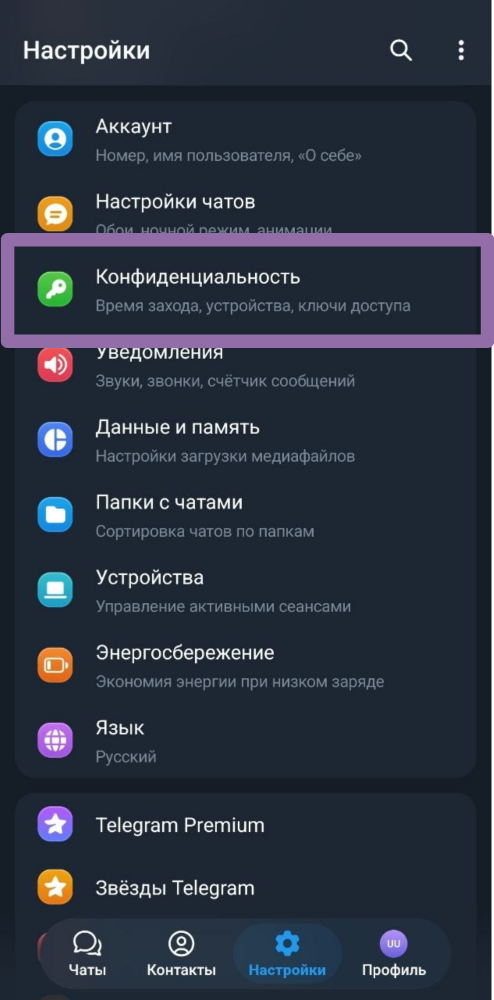
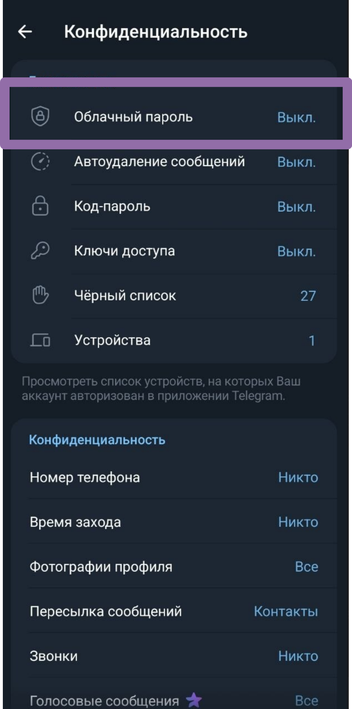
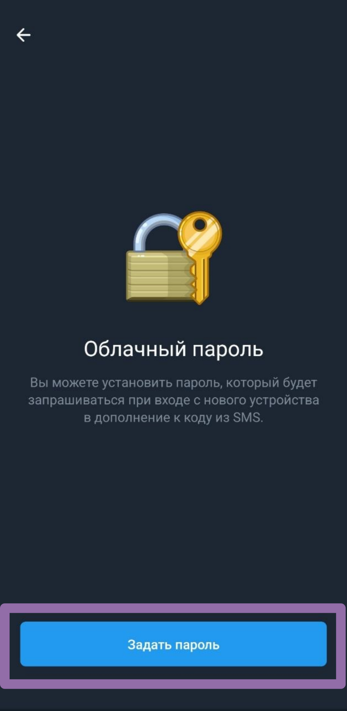
→Создайте и введите пароль, который будет использоваться при входе в аккаунт с нового устройства.→Подтвердите пароль→ Укажите подсказку для пароля.
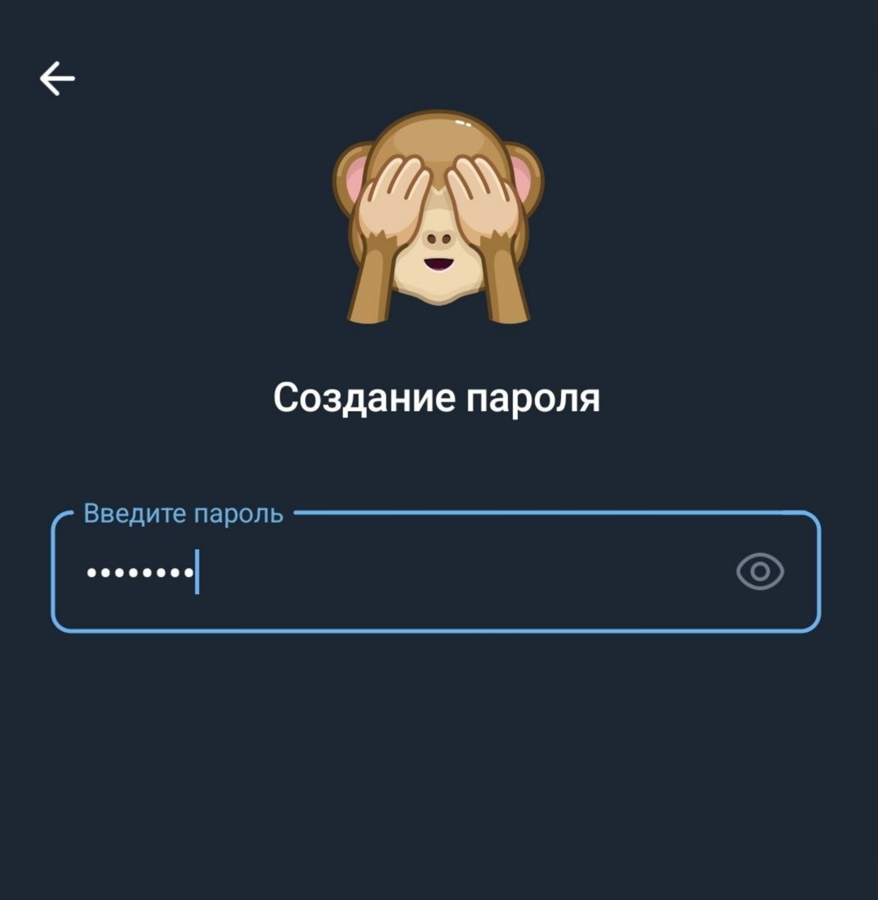
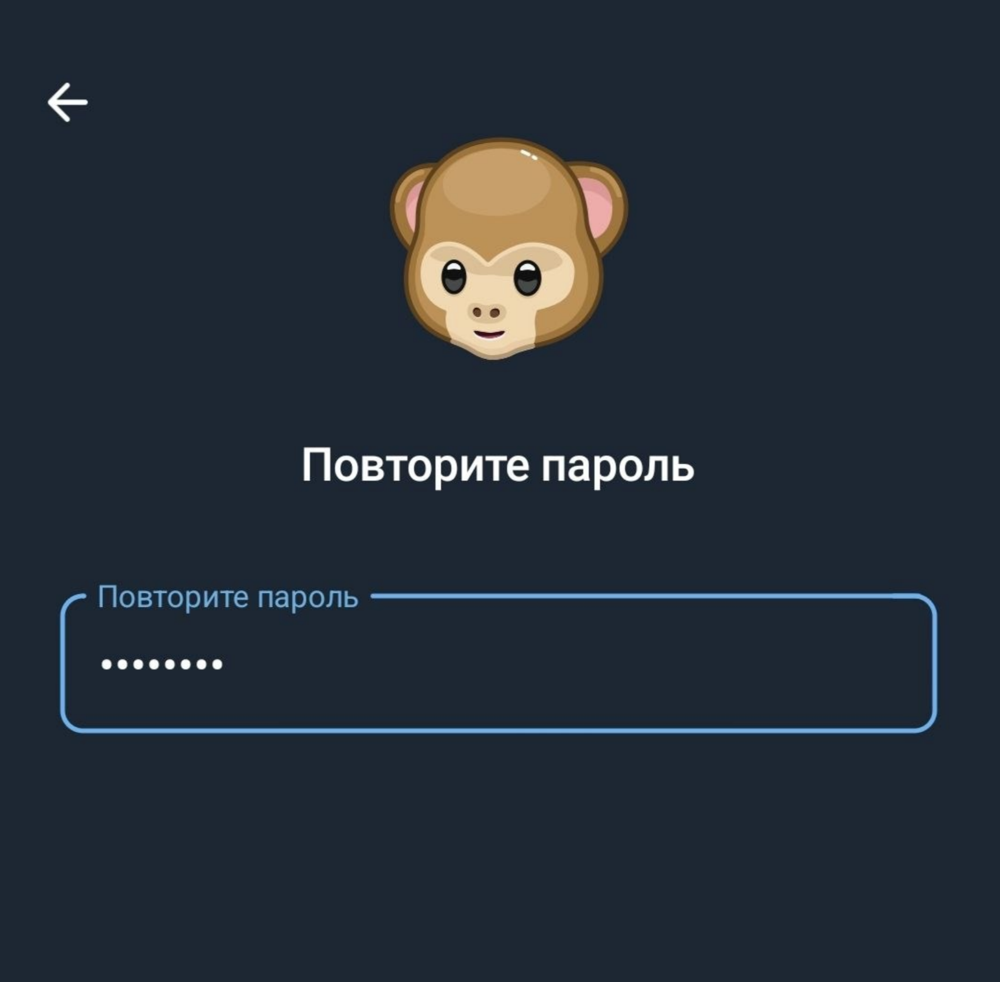
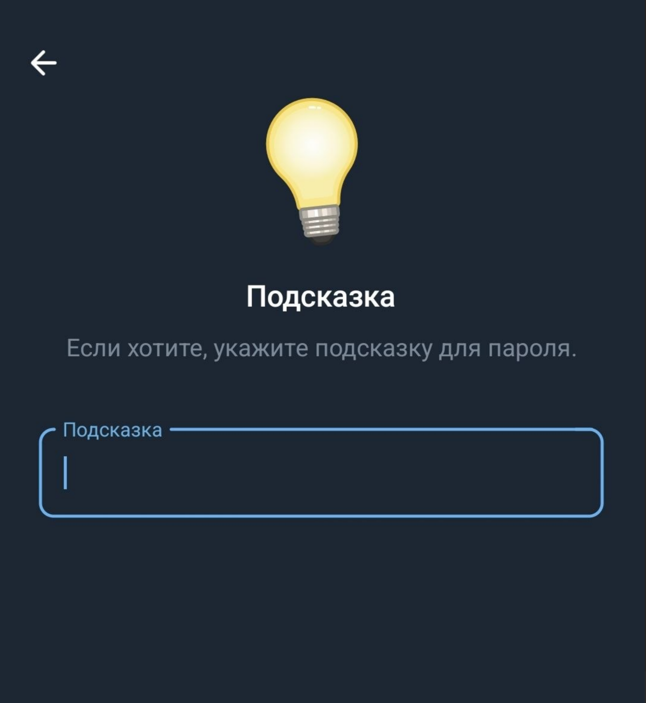
→ Добавьте электронную почту для восстановления доступа к аккаунту→ Чтобы завершить - введите код
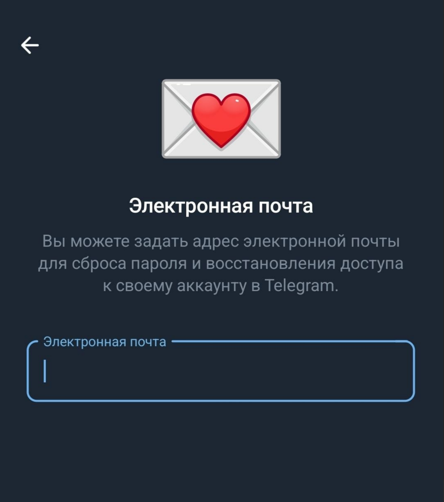
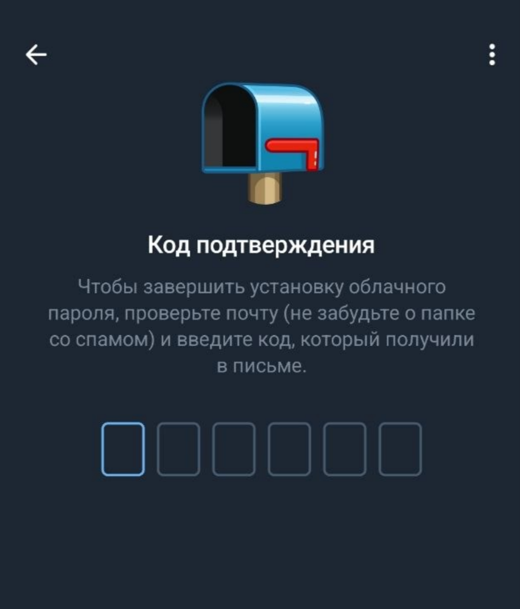
Все готово ! Теперь придуманный вами пароль нужно вводить при авторизации на новом устройстве
Личная информация
В разделе «Конфиденциальность» можно настроить, кто видит:
- фото профиля;
- время последнего посещения;
- номер телефона;
- статус активности;
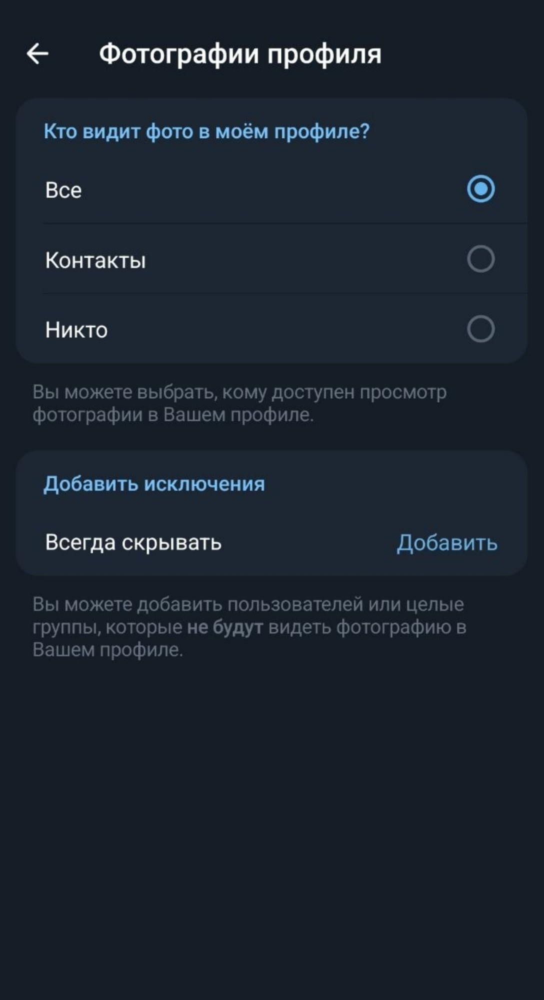
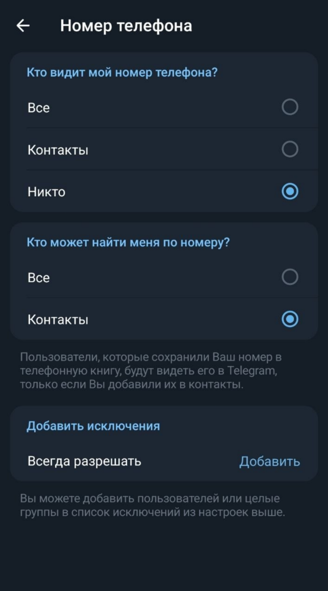
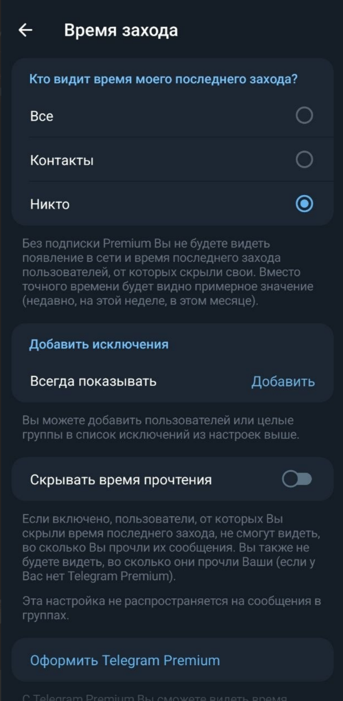
Управление активными сеансами
Это позволяет мгновенно обнаружить и прервать чужой доступ к вашему аккаунту.
Как проверить: Настройки → Устройства.
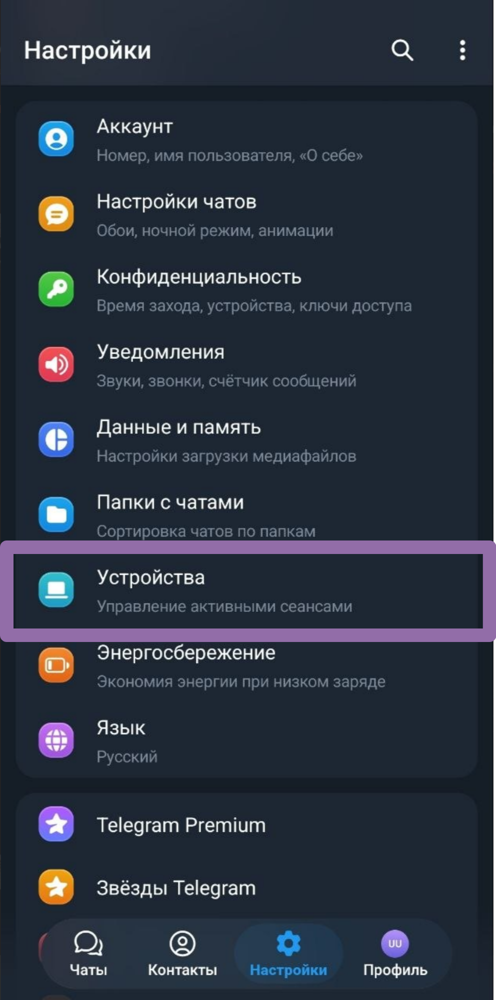
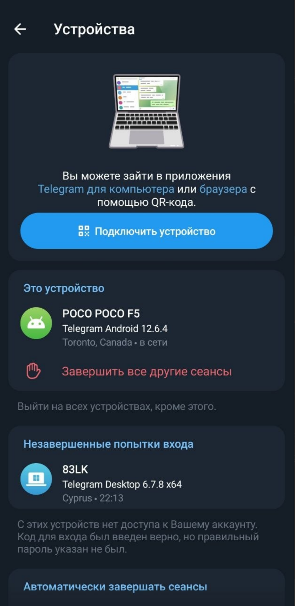
Если видите незнакомый город или устройство — нажмите «Завершить все другие сеансы».
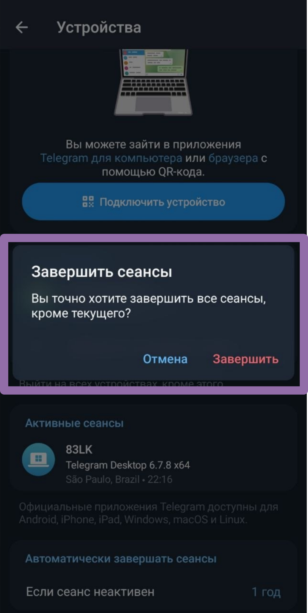
Фишинг и мошенничество
- В мессенджерах чаще «взламывают» не систему, а человека.
- Никому не сообщай одноразовые коды и пароли. Даже если пишет «друг» или «сотрудник безопасности». Не вводите их нигде, кроме официального приложения Telegram.
- Не переходи по ссылкам «посмотри фото», «проголосуй», «это ты на видео», «бесплатный телеграмм премиум».
- Блокируйте навязчивые боты. Они будут часто напоминать о себе. Если после первого общения с ботом в Telegram вы уверены, что он вам не будет нужен, то блокируйте.